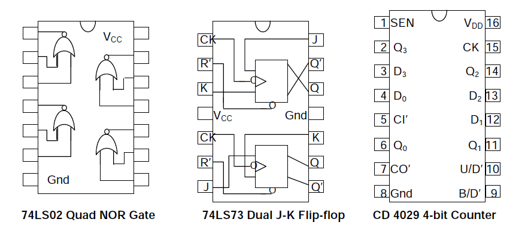
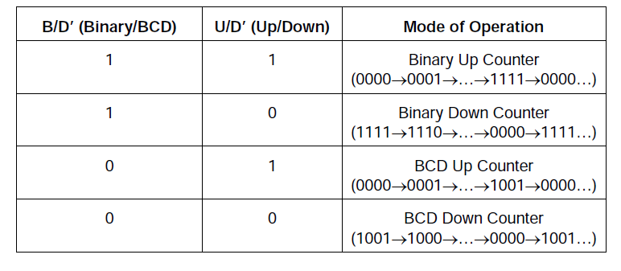

In digital logic and computing, a counter is a device which stores (and sometimes displays) the number of times a particular event or process has occurred, often in relationship to a clock signal. In this experiment, different types of counters will be studied, both for the full binary sequence and for cycle lengths (N) different from powers of 2.

Usually, counter circuits are digital in nature, and count in natural binary. Many types of counter circuits are available as digital building blocks, for example a number of chips in the 4000 series implement different counters.
Occasionally there are advantages to using a counting sequence other than the natural binary sequence such as the binary coded decimal counter, a linear feedback shift register counter, or a Gray-code counter.
Counters are useful for digital clocks and timers, and in oven timers, VCR clocks, etc.
The counters will be assembled using two 74LS73 dual J-K flip-flop chips and a 74LS02 quad NOR chip. Note that each flip-flop has an asynchronous Reset (R’) input besides the synchronous J-K inputs. This enables one to reset any of the flip-flops by making R’ = 0 irrespective of the status of the clock (CK) input. The asynchronous R’ input will be utilised in this experiment to initialise the flip-flop outputs as well as to obtain counters having cycle length N is less than 16.
Pin connections:

Binary Ripple Counter
1. Make J = K = 1 for all the flip-flops, thereby converting the J-K flip-flops to T flip-flops. Connect all R’ inputs together to an Input Switch, and the outputs Q0,Q1,Q2,Q3 to four LED Displays.
2. Set up an Up-counting Binary Ripple Counter by making clock connections as follows: CK0 = Manual Clock (CLK-M), CK1 = Q0, CK2 = Q1, CK3 = Q2.
3. Using the Input Switch connected to the common R’ input, initialise the counter to the stat
4. Apply Manual Clock pulses and tabulate the state sequence for the entire cycle.
5. Now change the clock input connections to CK1 = Q0’, CK2 = Q1’, CK3 = Q2’, to obtain a Down-counting Binary Ripple counter.
Asynchronous (ripple) counter:
An asynchronous (ripple) counter is a single JK-type flip-flop, with its J (data) input fed from its own inverted output. This circuit can store one bit, and hence can count from zero to one before it overflows (starts over from 0). This counter will increment once for every clock cycle and takes two clock cycles to overflow, so every cycle it will alternate between a transition from 0 to 1 and a transition from 1 to 0. Notice that this creates a new clock with a 50% duty cycle at exactly half the frequency of the input clock. If this output is then used as the clock signal for a similarly arranged D flip-flop (remembering to invert the output to the input), you will get another 1 bit counter that counts half as fast. Putting them together yields a two-bit counter:
| Cycle | Q1 | Q2 | (Q1:Q0)dec |
| 0 | 0 | 0 | 0 |
| 1 | 0 | 1 | 1 |
| 2 | 1 | 0 | 2 |
| 3 | 1 | 1 | 3 |
| 4 | 0 | 0 | 0 |
Synchronous counter:
A simple way of implementing the logic for each bit of an ascending counter (which is what is depicted in the image to the right) is for each bit to toggle when all of the less significant bits are at a logic high state. For example, bit 1 toggles when bit 0 is logic high; bit 2 toggles when both bit 1 and bit 0 are logic high; bit 3 toggles when bit 2, bit 1 and bit 0 are all high; and so on. Synchronous counters can also be implemented with hardware finite state machines, which are more complex but allow for smoother, more stable transitions. Hardware-based counters are of this type.
Decade counter:
A decade counter is one that counts in decimal digits, rather than binary. A decade counter may have each digit binary encoded (that is, it may count in binary-coded decimal, as the 7490 integrated circuit did) or other binary encodings (such as the bi-quinary encoding of the 7490 integrated circuit). Alternatively, it may have a "fully decoded" or one-hot output code in which each output goes high in turn (the 4017 is such a circuit). The latter type of circuit finds applications in multiplexers and demultiplexers, or wherever a scanning type of behavior is useful. Similar counters with different numbers of outputs are also common.
The decade counter is also known as a mod-counter when it counts to ten (0, 1, 2, 3, 4, 5, 6, 7, 8, 9). A Mod Counter that counts to 64 stops at 63 because 0 counts as a valid digit.
A decade counter has the count sequence 0 → 1 → 2 →.....→ 8 → 9 → 0.., which can be achieved by making R’ = (Q3 •Q1)’ for all the flip-flops in a 4-bit binary counter. This forces the counter to go to the state 0000 as soon as the counter makes the transition from the state 1001 representing count 9 to the next state 1010 according to the normal up counting sequence.
Decade synchronous counter
The logic for the J-K inputs required for a Decade Synchronous Counter is as follows:
J0 = K0 = 1; J1 = Q0•Q3’, K1 = Q0; J2 = K2 = Q0•Q1; J3 = Q0•Q1•Q2, K3 = Q0.
Multipurpose 4-bit Synchronous Counter
CD4029 is a multipurpose 4-bit counter capable of operating in all the four combinations of Binary/BCD and Up/Down modes, depending on the values of the control inputs B/D’ and U/D’.
In addition, the 4-bit output Q3Q2Q1Q0 of the counter can be preset to any value by applying the desired bits to the direct inputs D3D2D1D0 and making the Set ENable control SEN = 1.

Source: Wikipedia

- The objective of this experiment is to understand working of the counters.
- Try to make basic ripple counter and ring counter.


Digital Logic Design
This lab allows you to design and simulate any digital
combinational or sequential circuit. Following instruction help you
build the circuit. A Java-based basic tool and simulation enigne is
at the hear of this laboratory. You can create many circuits and
test them with fixed or time-varying input signals. You can also see
the outputs as values or time-varying waveforms.
The tool consist of mainly four pannels: Left Pannel, Mid Pannel, Right Pannel, and Top Pannel.
Left Pannel
Gate Buttons: These buttons are used to draw basic gates like AND, OR, XOR, NOT, NOR, NAND,XNOR andCONNECTOR . Click on these by drop down menu then select the proper number of inputs . Once You have finalized the gate & number of inputs then click on SELECT Button and place the gate where you want to in the mid pannel drawing area.
Probe: Output at each terminal is shown by default against it. Iif you want explicitly to watch another node, you can probe it using a feature from the left panel.
None: It is used to get default cursor option back, so that you can do basic operation like drag and drop.
Delete Element: This is used for explicitly deleting an element. Click on the element after selecting delete mode.
Connect/Disconnect: This mode allows establishing and removing connection between various points. Connection can be established only from output to input. You have to first click to the output node then to the input node (consisting of red square box). For disconnection, you can start by clicking either the input or the output node.
Naming: This is used to give a user-selected name to an input or output node. Click on the node and give the name into the input box that pops up.
Output: This is used to define an output node. See the explanation of import button to learn why this may be necessary.
Time Pulse: Enter the time pulse pattern separated by commas. For example: 0,10,10,10,10 defines a clock that is 0 for 10 units and 1 for 10 units. Press enter or click on the new timepulse to create it. It will be available as input in list box.
Binary One And Zero: These can be used to give fixed values to terminals
Top Pannel
Clear: Use this to clear every element on the circuit. Caution: Everything on the design panel will be lost; there is no undo!
Save: Use this to save the designed circuit as a file on your machine. This file can be loaded and imported later.
Load: A circuit saved on your machine can be loaded onto the mid panel to as a fresh circuit that can be further edited.
Import: This is an important feature that lets you construct building blocks. A circuit from your machine is imported to the mid panel, but will appear as a block or a box with input and output terminals. The name of the element is that of the imported file. The named terminals will have their saved names. The input and output nodes will come in the same order from top to bottom as created. This allows one to build on circuits saved as blocks. For instance, an full adder you design using gates can be saved as a block and used in later circuits as an adder-block.
Simulate: Use this to simulate or compute the intermediate and final outputs of the whole circuit, if all the terminal inputs are present. It also computes the gate delays, which is diplayed when the mouse hovers over each element. The default gate delay is -1. Simulation can fail or give ambiguous result if the circuit does not stablizes with time. This can happen due to improper feedback circuitry. The underlying engine is not a full fledged circuit simulator and can get stuck at constructions involving certain feedback.
Mid Pannel: This is the drawing area used to build the circuit. You can move the elements by clicking and dragging.
Right Pannel: This area shows the time-varying inputs, outputs, and probed points. Name or index associated with points are displayed. Indexes are given top to bottom.
Note: Sample circuit for each experiment will be given as default. You can try them with the help of load_it or impor_itt button.It is advised try to built circuit of your own before trying the default circuit.

1) Design a 4 bit Synchronous UP counter using 4 JK flip flops, a common clock pulse, and basic gates.
2) Design a synchromous BCD counter which counts from 0000 (0) to 1001 (9) and then back to 0000 (0).You can use 'T' flip flops / Jk flip flops and some basic gates in the design. All the flip flops should have a common clock pulse. There must be a 'Count Enable' input which enables the counter. Save this counter so that it can be used in other designs.
3) Import the BCD counter designed in 2nd question. Import 3 such counters. Design a 3-decade decimal counter using these 3 BCD counters. The entire system should be able to count from 000 to 999, where each counter individually generates 1 digit of the number.
HINT: The 'Count enable' input of 2nd BCD counter will be 1 only when first counter is at 9, and 'Count enable' of 3rd counter will be 1 only when both first and second counters are at 9.
4) Import the BCD to seven segment display decoder circuit designed in experiment 3. It takes BCD code as input and displays its decimal equivalent on 7-segment LED display. Import the BCD counter designed in question 2. Connect the output lines of BCD counter to the input lines of 'BCD to seven segment display' circuit. Verify that appropriate number is being displayed by the LED in the count sequence.

- With The help of Theory Page , try to build the Counter Circuit.
- First of all build the basic counter .
- Then make the Ring Counter
- If You are unable to make it , load or export the circuit directly and use it
- Use Time variant input pulses to analyze the output

- Counters - Wikipedia
- Chapter 7 : Registers, Counters and Memory unit, "Digital Logic and Computer Design" - M. Morris Mano